TSA Drone Challenge: 5-inch FPV Drone
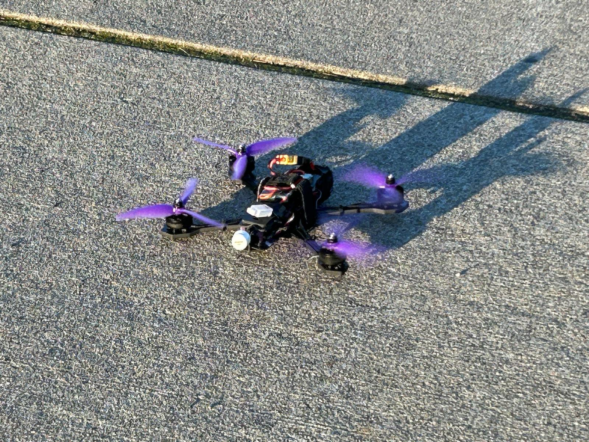
Overview
For the TSA Drone Challenge, our team built a 5-inch FPV (first-person view) quadcopter from individual components rather than a ready-to-fly kit. That meant choosing a compatible power system, soldering high-current connections, wiring serial and video links, and configuring the flight controller ourselves. The drone flies reliably with working motors, radio link, and live video to FPV goggles. The project also included researching the airspace restrictions at the national conference site near Washington, D.C.
My role: State exactly what you did on this team project, e.g. “soldered the motors and ESC, wired the receiver, and handled all Betaflight configuration.” Admissions readers and interviewers value a clear, honest account of your contribution.
What this project accomplished
- Assembled a complete 6S brushless power system: four 2207 1800KV motors on a 4-in-1 ESC stacked with an F4 flight controller.
- Hand-soldered all motor leads to the ESC pads using flux and pre-tinned joints, and pull-tested each connection.
- Wired an ELRS receiver to the flight controller's UART4 and configured it as a CRSF serial receiver.
- Diagnosed a video-system incompatibility with the flight controller and re-architected the video path to work around it.
- Configured arming switches, verified motor order and spin direction, and tested safely with props removed.
- Researched FAA recreational rules and the Washington, D.C. Special Flight Rules Area for the national conference.
Build at a glance
| Frame | Lumenier QAV-S 2, 5-inch |
|---|---|
| Flight controller | XILO Stax V3 F4 (30 × 30 mm stack) |
| ESC | XILO Stax V3 50A AM32 4-in-1, 3–6S |
| Motors | 4 × XILO Stealth 2207 1800KV (6S) |
| Propellers | Gemfan Hurricane 4937, 3-blade |
| Battery | Ovonic 6S 1300 mAh LiPo (22.2 V), XT60 connector, 14 AWG leads |
| Radio | ExpressLRS receiver on UART4 (CRSF protocol), handheld transmitter |
| Video | Analog FPV camera, XILO Stax 5.8 GHz VTX (25–600 mW), Fat Shark Recon goggles |
| Software | Betaflight Configurator |
Build process
Frame and motors
We assembled the 5-inch frame, aligned the motor arms and the central stack mount, and bolted on the 2207 1800KV motors, a common pairing for 6S 5-inch builds that balances thrust and efficiency. One early observation: the frame is fairly heavy, which makes adding a claw or payload mechanism harder later.
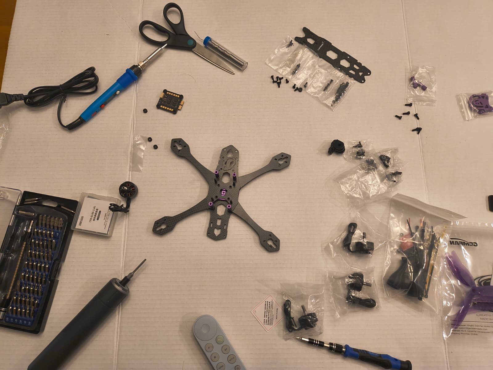
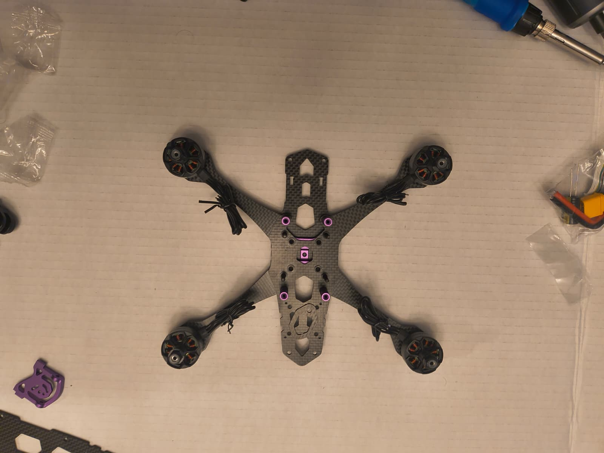
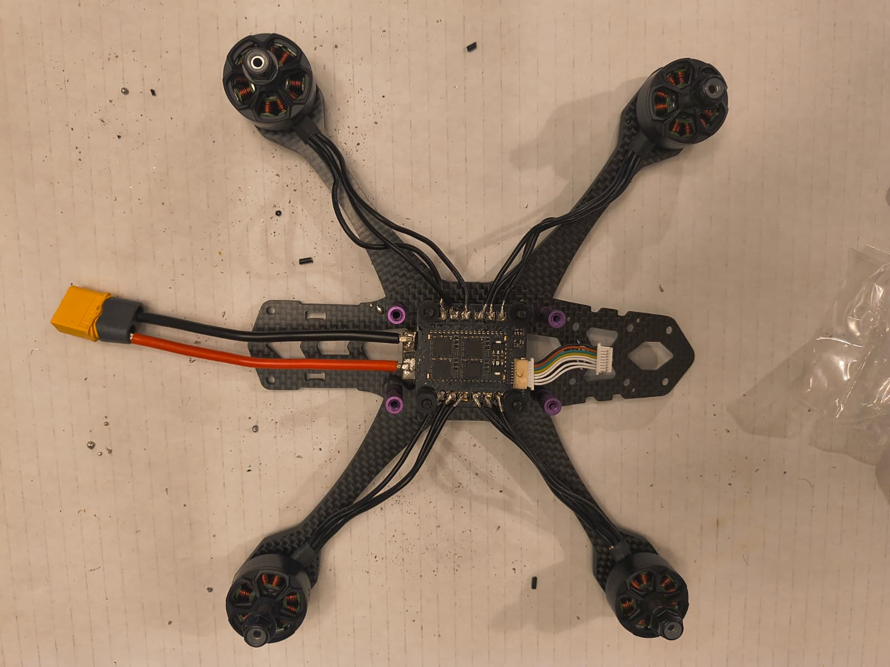
ESC and soldering
The 4-in-1 ESC mounts on the frame's stack standoffs and converts the battery's DC into the three-phase signals each brushless motor needs. Each motor's leads were cut to length, fluxed, and tinned; the ESC pads were fluxed and pre-loaded with solder; then each lead was reflowed onto its pad with the iron alone. This was our first time soldering high-current pads, where too much heat can lift a pad and destroy the board, so every joint was gently pull-tested afterward.
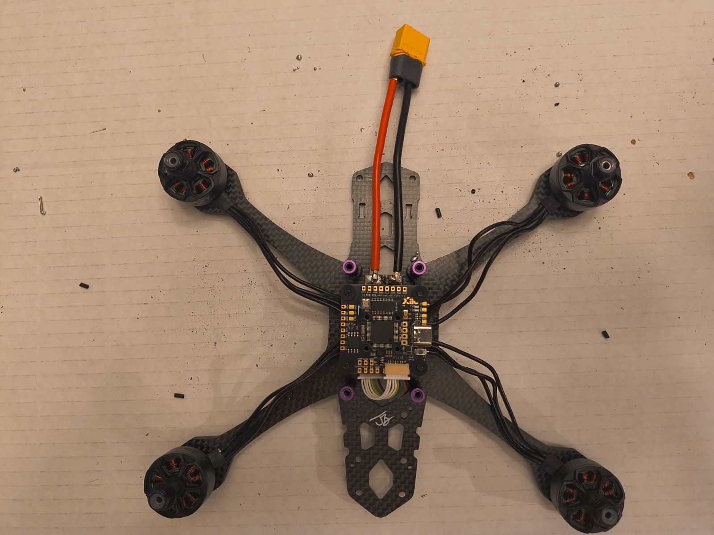
Flight controller and receiver
The F4 flight controller stacks above the ESC on the same mounting pattern and connects to it with the supplied harness. The ExpressLRS receiver was wired to the next free UART (TX4/RX4, plus power and ground) and bound to the transmitter.
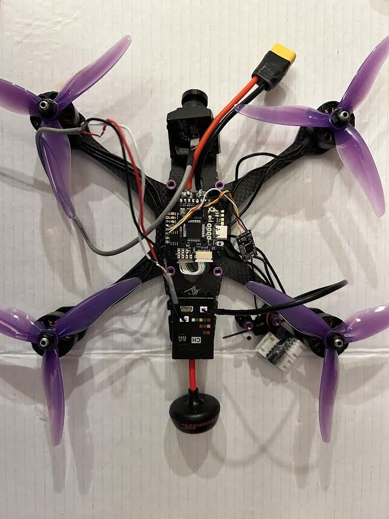
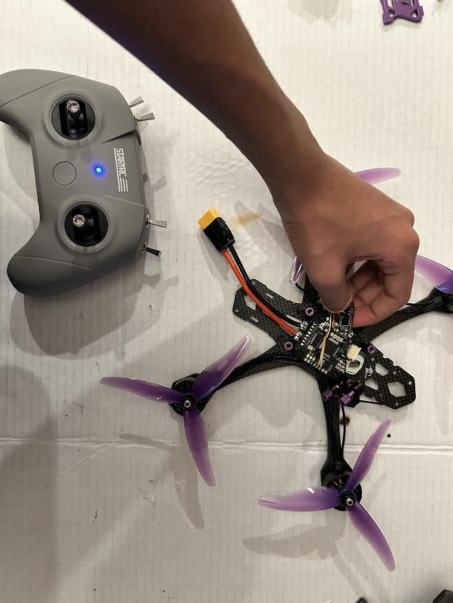
Video system: a debugging story
We first soldered the VTX and camera to the flight controller's dedicated video and power pads, but couldn't get a working picture. After troubleshooting and research, we found the video components weren't compatible with connecting through this flight controller. We desoldered them, wired the camera directly to the VTX, and powered the video system from its own small battery. This got video working again. The trade-off was losing the flight controller's connection to the video system, which meant giving up convenient in-flight battery monitoring.
Final assembly
The receiver antenna, camera mounts, top plate, and a cable organizer for the 14 AWG battery leads went on last (after sorting out a fitment problem caused by using the wrong screws in a few places), followed by a foam pad and a Kevlar strap to secure the battery.
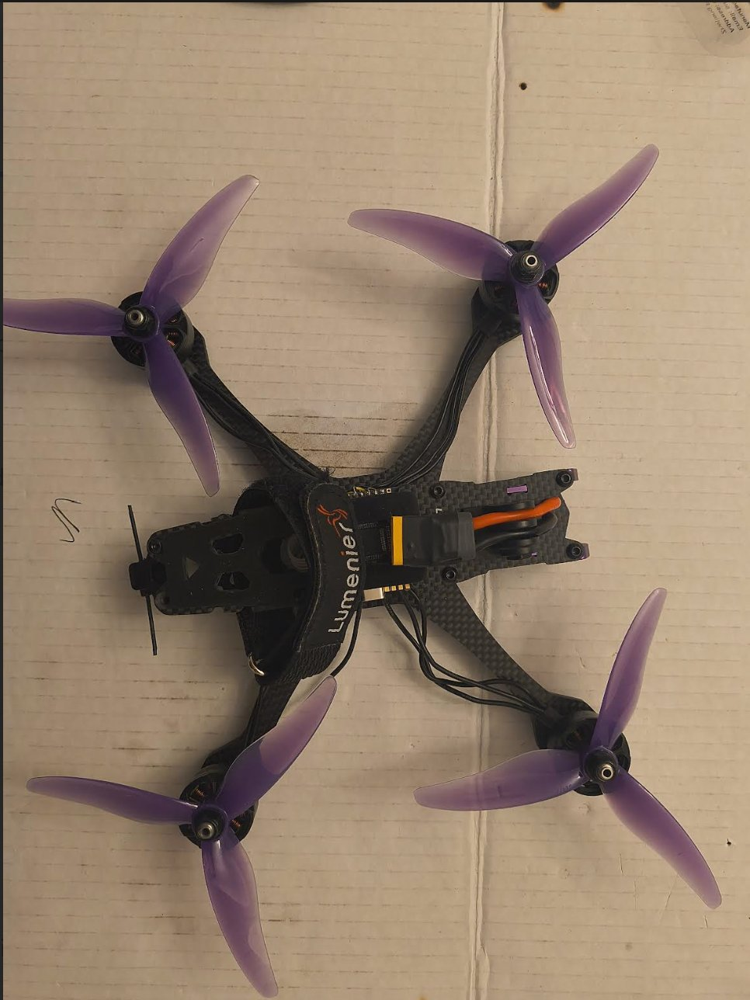
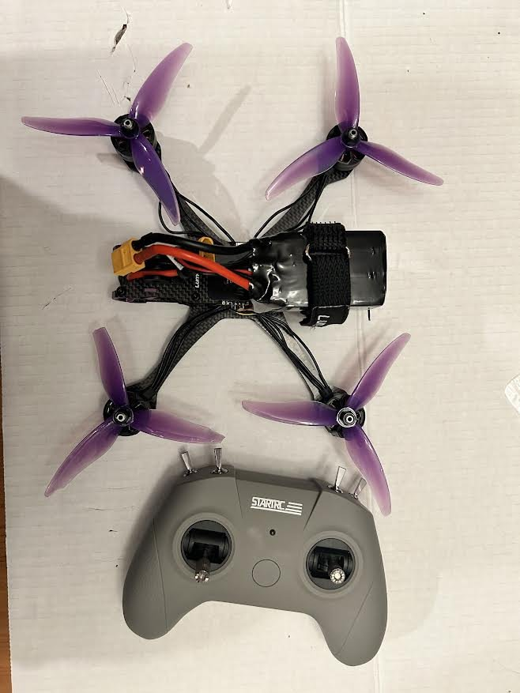
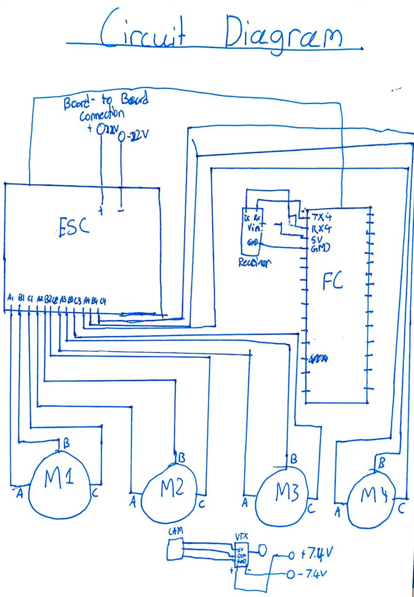
Betaflight configuration
- Ports. A UART is a serial link between the flight controller's processor and a peripheral. Because the receiver is soldered to TX4/RX4, UART4 was set to Serial RX.
- Receiver. Set the provider to CRSF, then confirmed the link by moving the sticks and switches and watching every channel respond (motors stay disabled while connected over USB).
- Modes. Assigned arming and other functions to auxiliary switches. Arming only triggers when its switch channel reads 1700–2100 µs, so a switch in its low position can't arm the drone by accident.
- Motors. Spun each motor at low throttle with props removed to confirm it worked, then used motor reordering and slow-motion video to verify spin direction. Diagonal motor pairs must spin the same way so their torques cancel, and any wrong motor was reversed in software.
Click a screenshot to open it full size.

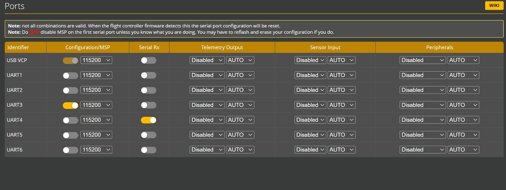

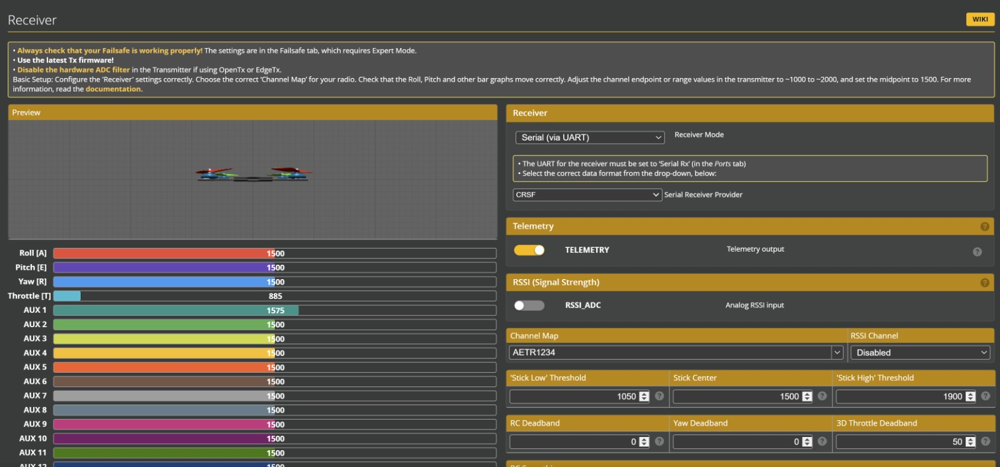

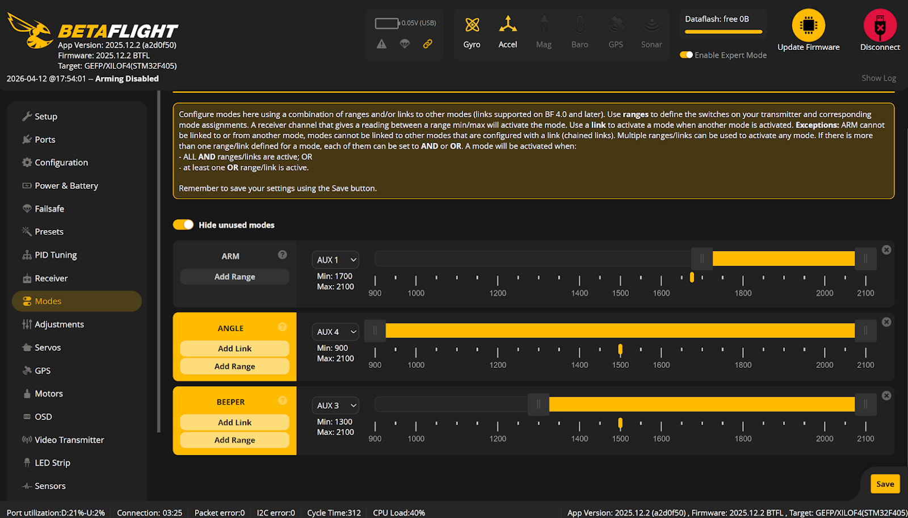

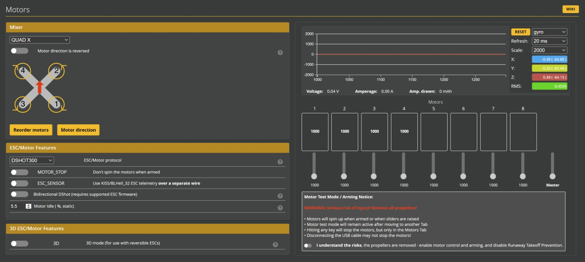
Regulations research
The national conference was held near Washington, D.C., inside the Special Flight Rules Area around Reagan National Airport (DCA). We documented its two rings: drone flight within 15 miles of DCA is prohibited without specific FAA authorization, while recreational flight between 15 and 30 miles is allowed under limited conditions: registered aircraft, below 400 ft, within visual line of sight, in clear weather, and well away from other aircraft. We also summarized the federal recreational rules, including registering and marking any drone over 250 g.
Media
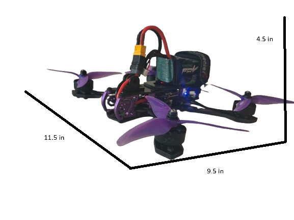
Lessons and next steps
- Check compatibility before soldering. The video rework cost time and a feature; reading the flight controller's documentation for camera and VTX support first would have caught it.
- Payload mechanism. Describe the status of the servo gripper (30 kg servo + gripper claw in the parts list), or remove this line.
- Weight. A lighter frame would leave more margin for mounting a claw or other payload.
Full documentation
Drone Challenge Portfolio: step-by-step photo log, wiring schematic, Betaflight setup, engineering drawing, bill of materials, and regulations research.
Open the Google Doc →